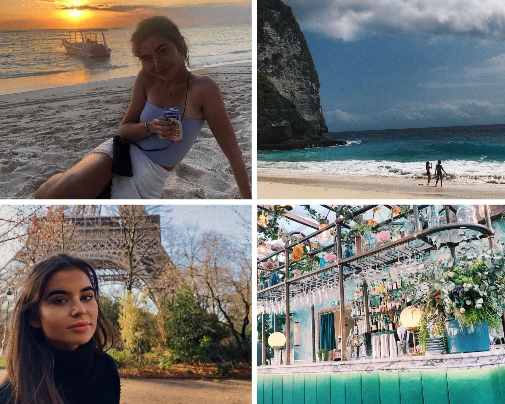

My name is Beth, I’m a second-year student at Oxford Brookes University studying journalism, media and publishing. I have decided to dedicate this blog to typography within the fashion industry. Let me introduce myself.
For most of my life i have lived in a small town in Devon, however i have also lived in Spain, Czech Republic and Holland. I love travelling, and i try to spend every summer escaping reality some way or another. The past few years i have spent my summers in Bali, backpacking and exploring the islands of Indonesia. I have just turned twenty- one and can safetly say that i've never felt more myself than i do at this age.

I grew up collecting magazines, I started with Vogue and ELLE, carrying the latest issues everywhere with me. I would turn each page entirely enchanted by the beautiful colours- marvelling at how they came together in the composition of the pages and editorials. However, I matured and so did my choice of magazines. Now, I carry an array, often clutching the latest issue of DAZED, ID, The Gentlewoman, and Cabana.
I hope to establish myself as a brilliant journalist, where eventually i will go into presenting. I love the broadcasting element to live news, it truly is where my passion lies.
I like to think lots of things inspire me: places, people, words. Sucessful women inspire me - Elizabeth Day, Dolly Alderton, Nigella, Emily Maitlis, Farrah Storr!